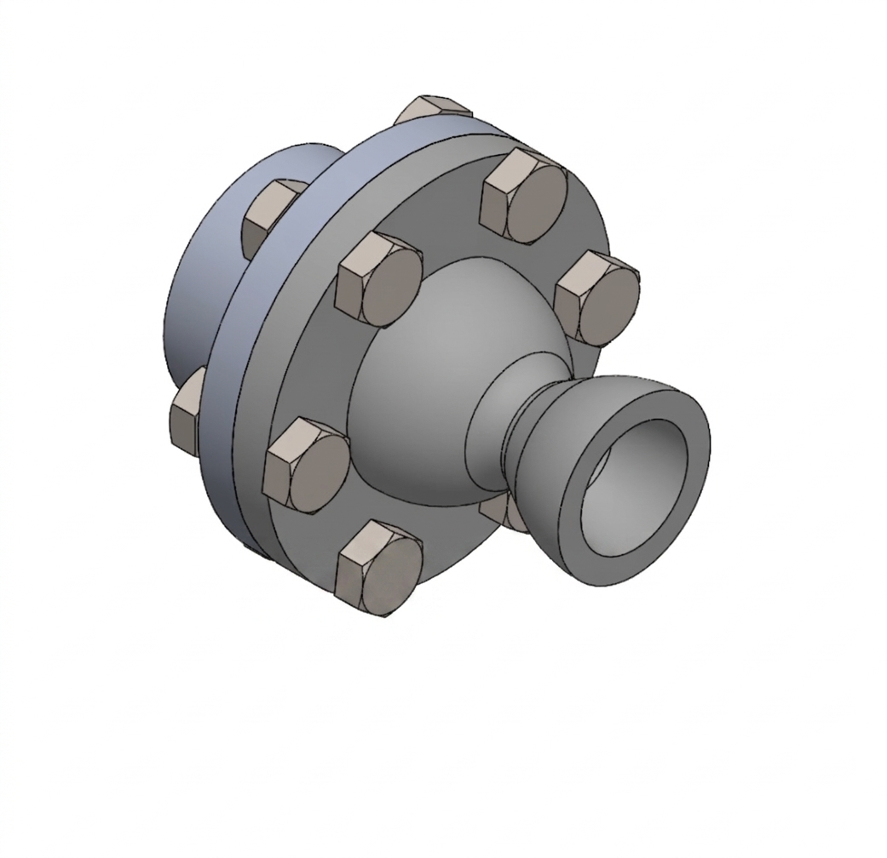
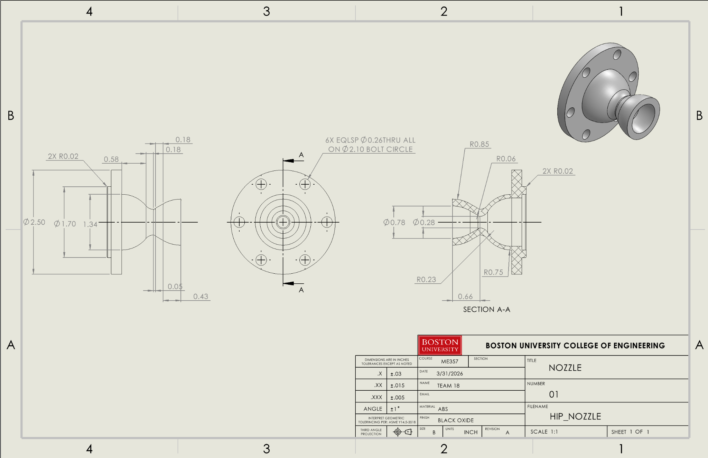
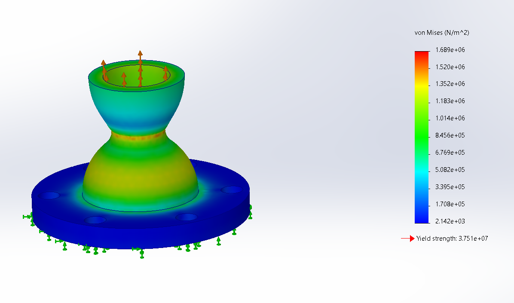
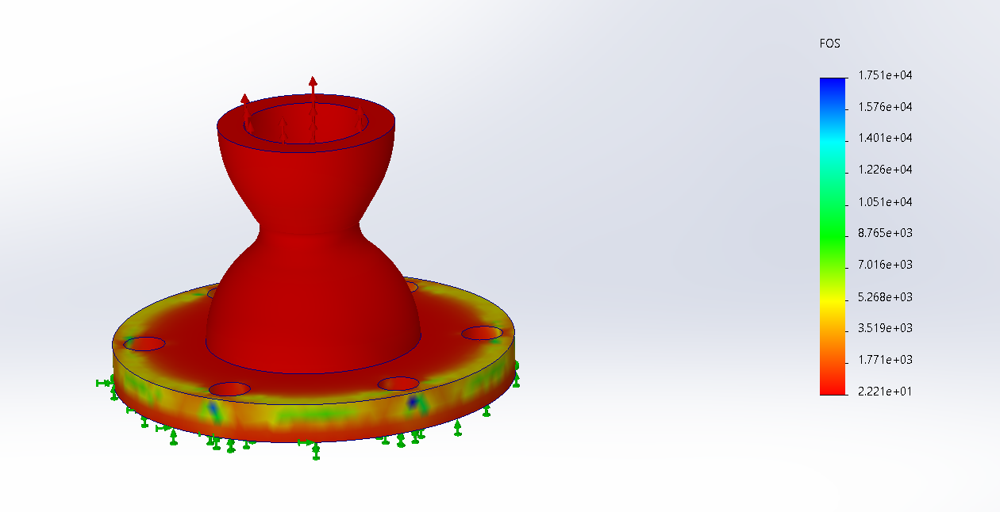

Hybrid Rocket Nozzle Design, Simulation, and Testing
I and 3 other team membersdesigned and modeled a nozzle for Boston University Rocket Propulsion Group’s hybrid introduction project. My work focused on nozzle performance calculations, SOLIDWORKS part and assembly modeling, and finite element analysis (FEA) of the nozzle under pressure. The project progressed through design reviews and culminated in a successful three-second static fire with no structural damage.
Skills: SOLIDWORKS, static FEA.
Nozzle Design and Performance
We compared a conical nozzle with 60% and 80% bell configurations and selected the 80% bell. The curved expansion contour was chosen to reduce exhaust divergence losses while balancing nozzle length, material use, and weight. The design calculations informed the throat, exit, and bell geometry used in the CAD model.
- Throat diameter: approximately 7.22 mm.
- Exit diameter: approximately 18.45 mm.
- 80% bell length: approximately 16.75 mm, compared with 20.95 mm for the calculated conical reference.
These dimensions are calculated design values from the critical design review (CDR), rather than measurements of the manufactured part.
SOLIDWORKS Modeling and Assembly
I developed the nozzle part, assembly views, and mechanical drawing in SOLIDWORKS. The model integrated the converging section, throat, bell-shaped expansion section, and mounting flange. Assembly views showed the nozzle interface and fastener arrangement, while the drawing documented the geometry for manufacturing.


Structural Simulation
I used SOLIDWORKS Simulation to evaluate von Mises stress, factor of safety, and displacement in a static pressure study. The CDR specifies ABS resin, a pressure load of 46.27 psi derived from the throat-pressure calculation, and the default mesh size.
The stress plot shows a maximum von Mises stress of approximately 1.69 MPa, and the factor-of-safety plot shows a minimum of approximately 2.2 for the modeled conditions.


Testing and Results
The project completed a successful three-second static fire with no structural damage.

View our critical design review presentation (April 16, 2026). The presentation includes the nozzle calculations, CAD views, structural analysis, manufacturing plan, and the team’s electronics work.